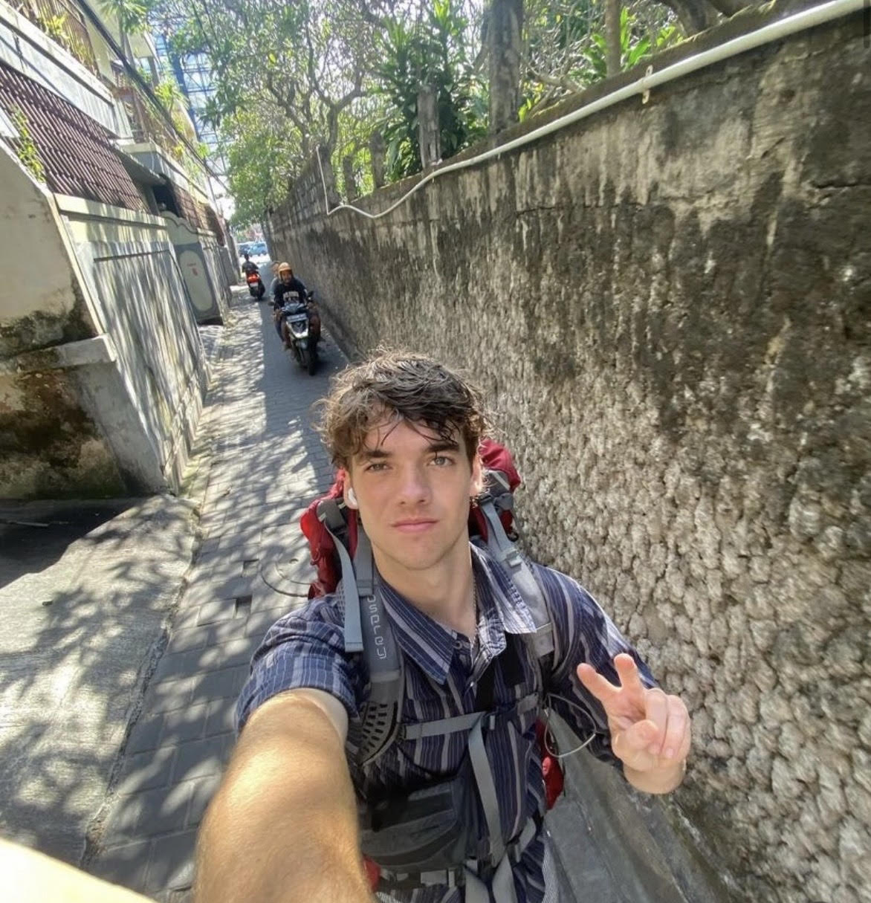
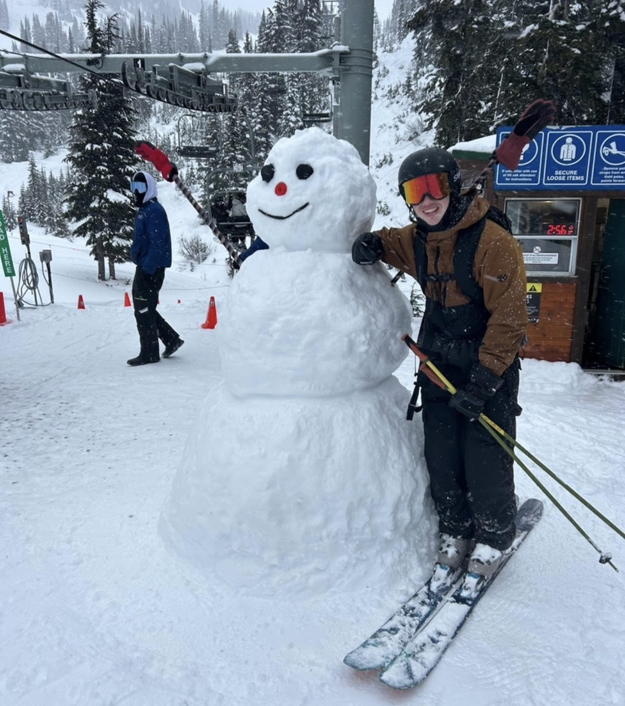
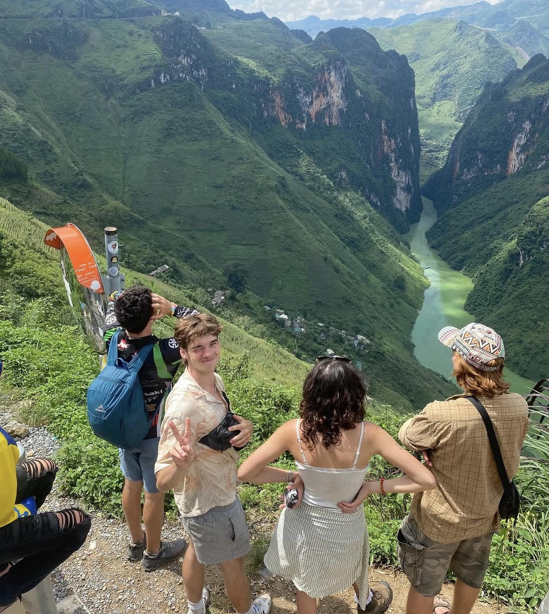
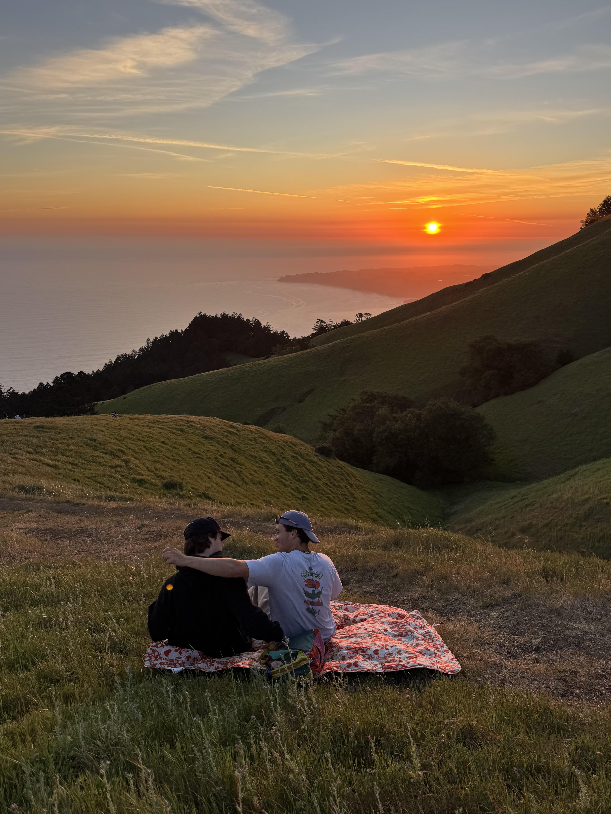

About Me

I'm an Electrical Engineering student at UVic interested in embedded systems, machine learning, and software integration. I've built firmware for biosensing systems at Noze, and most recently developed a Hardware-in-the-Loop testing infrastructure at Dometic Marine. Outside of work, I'm usually skiing in the mountains, playing guitar or travelling to remote cultures.

After graduating high school early at 17, I moved to Whistler for five months to immerse myself in mountain culture and test what I was capable of. That decision sparked a transformative year where I spent seven months living independently across Indonesia, Turkey, Vietnam, and the Mediterranean—navigating unfamiliar environments and adapting to new cultures on the fly. Those experiences reshaped how I approach engineering: building systems that are resilient, adaptable, and designed to work across diverse contexts.

I believe the best technology comes from teams who deeply understand the constraints they're working within and genuinely care about the people they're building for. The most impactful work happens when engineers are connected to the real-world problems they're solving.

I'm drawn to roles where I can work with thoughtful, driven people and see the tangible impact of the systems I help build—whether through embedded software, machine learning, or hardware design. I'm excited to continue growing as an engineer and see where this path leads.